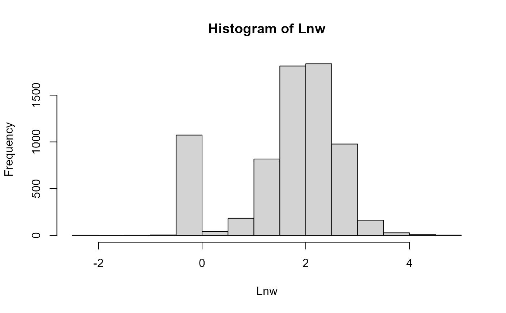

The data come from the Panel Study of Income Dynamics, years 1981 to 1992 (also contains earnings data from 1980). The sample consists of 579 white females, who were followed over the considered period. In total, there are 6,948 observations over the 12-year period (1981-1992). This data frame contains the following columns:
id: Individual identifier
year: Survey year
age: Calculated age in years (based on year and month of birth)
educ: Years of schooling
children: Total number of children in family unit, ages 0-17
s: Participation dummy, =1 if worked (hours>0)
lnw: Log of real average hourly earnings
lnw80: Log earnings in 1980
agesq: Age squared
children_lag1: Number of children in t-1
children_lag2: Number of children in t-2
lnw2: Log of real average hourly earnings
Lnw: Log of real average hourly earnings
References
Anastasia Semykina, Jeffrey M Wooldridge (2013). “Estimation of dynamic panel data models with sample selection.” Journal of Applied Econometrics, 28(1), 47–61. Mikhail Zhelonkin, Marc G. Genton, Elvezio Ronchetti (2019). ssmrob: Robust Estimation and Inference in Sample Selection Models. R package version 0.7, https://CRAN.R-project.org/package=ssmrob. Ott Toomet, Arne Henningsen (2008). “Sample Selection Models in R: Package sampleSelection.” Journal of Statistical Software, 27(7). https://www.jstatsoft.org/article/view/v027i07.
Examples
data(PSID2)
attach(PSID2)
#> The following objects are masked from data:
#>
#> age, educ, id
#> The following objects are masked from data3:
#>
#> age, educ, id
#> The following objects are masked from nhanes:
#>
#> age, educ, id
#> The following objects are masked from Mroz87 (pos = 6):
#>
#> age, educ
#> The following objects are masked from MEPS2001 (pos = 7):
#>
#> age, educ
#> The following objects are masked from MEPS2001 (pos = 8):
#>
#> age, educ
#> The following objects are masked from MEPS2001 (pos = 9):
#>
#> age, educ
#> The following objects are masked from Mroz87 (pos = 10):
#>
#> age, educ
#> The following objects are masked from MEPS2001 (pos = 11):
#>
#> age, educ
#> The following objects are masked from MEPS2001 (pos = 12):
#>
#> age, educ
#> The following objects are masked from MEPS2001 (pos = 13):
#>
#> age, educ
hist(Lnw)

selectEq <- s ~ educ+ age+ children+ year
outcomeEq <- Lnw ~ educ+ age+ children
HCinitial(selectEq,outcomeEq, data = PSID2)
#> xs(Intercept) xseduc xsage xschildren xsyear
#> 1.904417294 0.021724081 -0.019771859 -0.169149600 -0.021483592
#> xo(Intercept) xoeduc xoage xochildren sigma
#> 0.492835520 0.128685876 -0.009081435 -0.119664822 0.854195970
#> rho
#> 1.426127369
#Note that the estimated value of rho by the two-step
#method is greater than 1
summary(HeckmanGe(selectEq,outcomeEq, 1, 1, data = PSID2))
#> Start not provided using default start values.
#>
#> --------------------------------------------------------------
#> Generalized Heckman Model (Package: ssmodels)
#> --------------------------------------------------------------
#> --------------------------------------------------------------
#> Maximum Likelihood estimation
#> optim function with method BFGS - iterations number: 40
#> Log-Likelihood: -7456.34
#> AIC: 14934.68 BIC: 15009.99
#> Number of observations: ( 1057 censored and 5891 observed )
#> 11 free parameters ( df = 6937 )
#> --------------------------------------------------------------
#> Probit selection equation:
#> Estimate Std. Error t value Pr(>|t|)
#> (Intercept) 1.733235 0.154623 11.209 < 2e-16 ***
#> educ 0.023020 0.007980 2.885 0.00393 **
#> age -0.019807 0.002328 -8.509 < 2e-16 ***
#> children -0.152344 0.020337 -7.491 7.69e-14 ***
#> year -0.002465 0.005552 -0.444 0.65714
#> --------------------------------------------------------------
#> Outcome equation:
#> Estimate Std. Error t value Pr(>|t|)
#> (Intercept) 0.4775107 0.0599492 7.965 1.91e-15 ***
#> educ 0.1178454 0.0032689 36.051 < 2e-16 ***
#> age 0.0028975 0.0008635 3.356 0.000796 ***
#> children -0.0233567 0.0076672 -3.046 0.002325 **
#> --------------------------------------------------------------
#> Dispersion terms:
#> Estimate Std. Error t value Pr(>|t|)
#> sigma 1.76942 0.01424 124.2 <2e-16 ***
#> --------------------------------------------------------------
#> Correlation terms:
#> Estimate Std. Error t value Pr(>|t|)
#> correlation -0.57671 0.06528 -8.834 <2e-16 ***
#> ---
#> Signif. codes: 0 '***' 0.001 '**' 0.01 '*' 0.05 '.' 0.1 ' ' 1
#> --------------------------------------------------------------